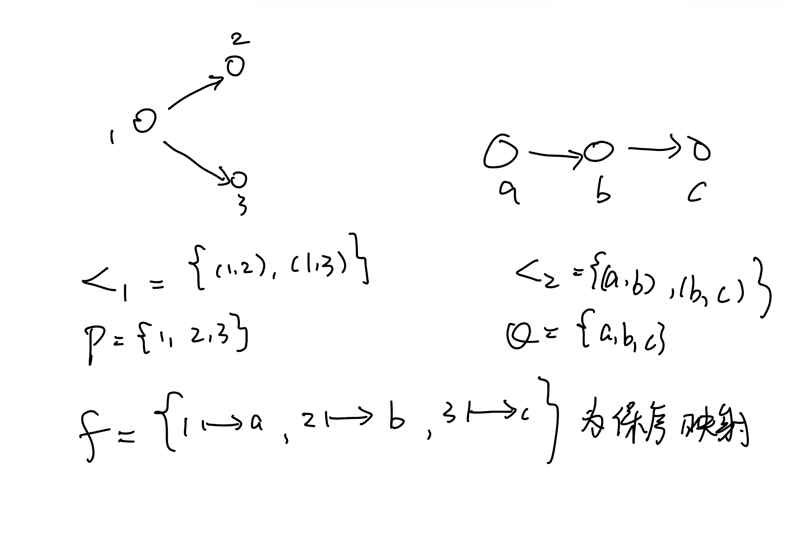

序之间的映射
保序映射
直观上
对于两个序结构 \((P,<_1),(Q,<_2)\)，我们考虑保持序结构的映射，即在 \(P\) 中有 \(x <_1 y\) ，蕴含 \(f(x) <_2 f(y)\) 这就是保持集合上序结构的映射。
考虑直观情形： 对于保序映射 \(f:P \rightarrow Q\)，像集 \(f[P]\) 若 \(f\) 单，则一定有 \(P\) 到 \(f[P]\) 的双射 \(f\) 由于双射的直观是一种重命名，所以我们可以完全复制 \(P\) 上的结构到 \(f[P]\) 上。 我们定义 \(f[P]\) 上的序关系（你来验证）： \(x <_1 y \Leftrightarrow f(x) <_1' f(y)\) 则我们有 \(<_1' \subset <_2\)，故 \(<_2\) 可以看作是 \(<_1'\) 的延拓。
对于一般的情况， 考虑映射的结构定理，\(\sim = \{ (x,y) : f(x) = f(y)\}\) \(f = \varphi \circ \pi\) \(\pi : P \rightarrow P/\sim , \varphi : P/\sim \rightarrow f[P]\) 容易看出来，位于同一个 \(\sim\) 等价类的元素（即属于 \(P/\sim\) 同一个元素的元素）两两之间不可比较。而且我们可以定义 $P/\sim $ 上的序 \([x] <_1' [y]\) 当且仅当 \(x <_1 y\)
这样能定义的原因大概是 \(f\) 保持了序结构，所以我们可以在这个商集中定义序关系。 然后由于 \(\varphi\) 是双射，我们自然可以定义 \(f[P]\) 上与 \(<_1'\) 长得一样的序结构 \(<_1''\)。 最后可以注意到 \(<_1'' \subset <_2\)
对于 \(\pi\) 这个映射，有一个有趣的情景。 考虑广东省所有公务员集体去北京开会，现在要安排出行车辆，每辆车的等级不一样，要求如果a是b的领导，那么a坐的车必须比b要等级高。那深圳市统计局某科员坐的车显然比深圳市市委书记坐的车低级，但是深圳市市委书记有可能和广东省公安厅长做一辆车，甚至市委书记坐的车要更低级，这是因为他们谁也不是谁的领导，坐车的等级不需要分出高低。 公务员的领导层级可能很复杂，是一个偏序，但是车的等级排序可能只是一个线序，比如按价格排序。这种情况我们就损失了一部分序的信息。 比如你一个东莞市市委书记，正厅级和我一个小小科员坐一辆车都是很有可能的，那书记肯定觉得很委屈，但是没办法，这个商集就是损失了这些信息。
一些例子： \(\mathrm{card}:(P(X),\in) \rightarrow (\mathbb{N},<)\) 是一个保序映射 \(\mathrm{id}:(\mathbb{N}^+,|) \rightarrow (\mathbb{N}^+,<)\) 也是
保序同构
直观上
就是两个序结构要长得一模一样，这意味着他们之间就是互相重命名的关系。 然而与之前的群同态、线性同构不一样的是，只要求 \(f\) 是保序映射且是双射是不够的，我们考虑把 \(P,Q\) 都放到统一的一个集合 \(R\) 上讨论，我们要求 \(\varphi_1: P \rightarrow R\) 是双射，且 \(\varphi_2 = f\circ \varphi_1^{-1}\)，显然也是双射。且 \(f = \varphi_2 \circ \varphi_1\) 定义 \(x <_1 y \Leftrightarrow \varphi_1(x) <_1' \varphi_1 (y)\) \(x <_2 y \Leftrightarrow \varphi_2 (x) <_2'\varphi_2(y)\) \(f\) 保序意味着 \(<_1' \subset <_2'\)，但是我们想要的是 \(<_1' = <_2'\)，这也就是两个序长得一样，那么我们还需要 \(f^{-1}\) 是一个保序映射。
比如 \(\mathrm{id}:(\mathbb{N}^+,|) \rightarrow (\mathbb{N}^+,<)\) 就不是我们想看到的情况 
所以就类似